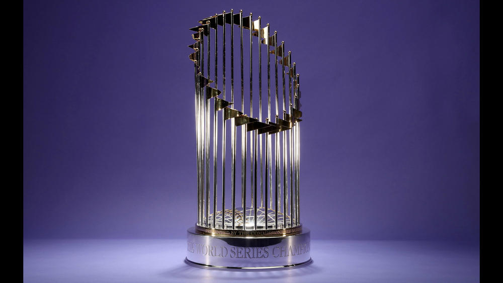

The Commissioner's Trophy is presented each year by the Commissioner of Baseball to the Major League Baseball team that wins the World Series. Recent trophy designs contain flags representing each team in North America's top two leagues, the National League and the American League. The two participating teams in that year's World Series were previously represented by two press pins set on the base of the trophy. It is the only championship trophy of the four major sports in North America that is not named after a particular person.